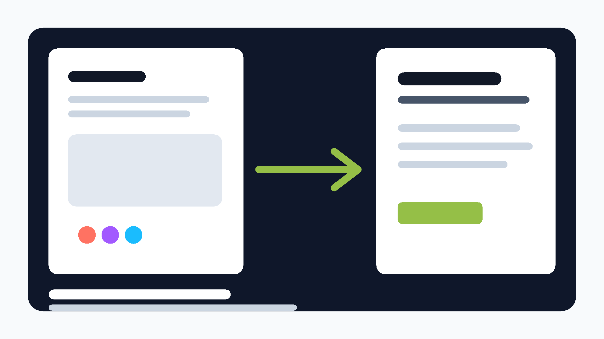

Triggers
Click/tap、hover、press、mouse enter、mouse leave、mouse down、mouse up、after delay。

Figma plugin · Shopify Liquid section exporter
把设计师做好的 Figma prototype frame，导出成 Shopify Online Store 2.0 可用的 Liquid section， 并尽量保留 click、hover、delay、overlay 与 Smart Animate 风格的 motion。
Built and credited by Jiehui.
在 Figma Desktop 从 `manifest.json` 导入本地插件。
选择一个完整 frame、component、instance 或 prototype 起点。
插件读取 layout、Shopify binding、prototype reactions。
复制 section code 到 Shopify theme 并上传 assets。
User guide
Motion 的目标不是只截图一个静态页面，而是把 Figma 里的结构、动态层命名和 prototype interaction 转换成一个 Shopify 可以安装、配置、预览和上线的 section file。
sections/motion-figma-prototype-to-shopify.liquid
assets/motion-figma-prototype-to-shopify.css
assets/motion-figma-prototype-to-shopify.js
templates/page.motion-figma-prototype-to-shopify.json
motion-figma-prototype-to-shopify-report.jsonStep by step
打开 GitHub 仓库，下载源码，或把 repo clone 到本地。插件入口文件已经准备好：`manifest.json`、`code.js`、`ui.html`。
打开 Figma Desktop，进入任意 Design file，右键画布，选择 Plugins > Development > Import plugin from manifest，然后选择 repo 里的 `manifest.json`。
选中一个顶层 frame、section、component 或 instance。建议选择完整的 Shopify 页面模块，例如 product hero、collection grid、announcement bar、campaign block。
把需要连接 Shopify 数据的 Figma layer 改名为 `product.title`、`product.price`、`product.image`、`product.add_to_cart`、`collection.grid`、`menu.main`、`cart.count` 等。
在 Figma Prototype 面板里设置 click、hover、after delay、open overlay、change to、navigate、Smart Animate。Motion 会读取 Figma reaction，并把支持的部分编译到 CSS/JavaScript。
运行 Motion，点击 Generate export。你可以直接 Copy Liquid，也可以 Download ZIP 获取 section、assets、template JSON 和 conversion report。
进入 Shopify Admin > Online Store > Themes > Edit code，新建 section，命名为 `motion-figma-prototype-to-shopify`，删除 starter code，粘贴完整 Liquid 后保存。
回到 Customize，添加 Motion section，选择 product fallback、collection fallback、main menu 等设置。若导出 ZIP 里有图片或 SVG，请上传到 Shopify theme assets。
Figma setup
最好的输入是一个完整、命名清楚、prototype flow 已连好的 frame。Motion 会尽力复制视觉布局和 motion， 但 Figma 原型不是浏览器运行时，所以复杂逻辑会写进 report，让开发者知道要手动补哪一段。
| Figma layer name | Shopify output |
|---|---|
product.title |
Product title |
product.price |
Money formatted price |
product.image |
Featured product image |
product.add_to_cart |
Product form button |
collection.grid |
Product loop from selected collection |
menu.main |
Navigation links from Shopify menu |
Shopify paste
Motion 生成的 Liquid 已经包含 `{% stylesheet %}`、`{% javascript %}` 和 `{% schema %}`， 所以最快测试方式是直接复制完整 section code 到 Shopify。
Open full Shopify guidemotion-figma-prototype-to-shopify<section data-motion-figma-prototype-to-shopify>
{{ product.title | escape }}
</section>
{% schema %}
{ "name": "Motion: Figma Prototype to Shopify" }
{% endschema %}Prototype motion
Motion 会读取 Figma prototype reactions，并把可安全运行在 Shopify storefront 的 motion 编译成浏览器事件。 不支持或需要人工判断的功能会保存在 export report。
Click/tap、hover、press、mouse enter、mouse leave、mouse down、mouse up、after delay。
Navigate、swap、change to、open overlay、back、close、open URL。
Dissolve、directional movement、push/slide-style movement、Smart Animate-like layer diffs。
Position、scale、rotation、opacity、solid fill color。
Ready to try
当前版本可以作为本地 Figma development plugin 使用。Figma Community marketplace submission 文件也已经在 repo 里准备好。